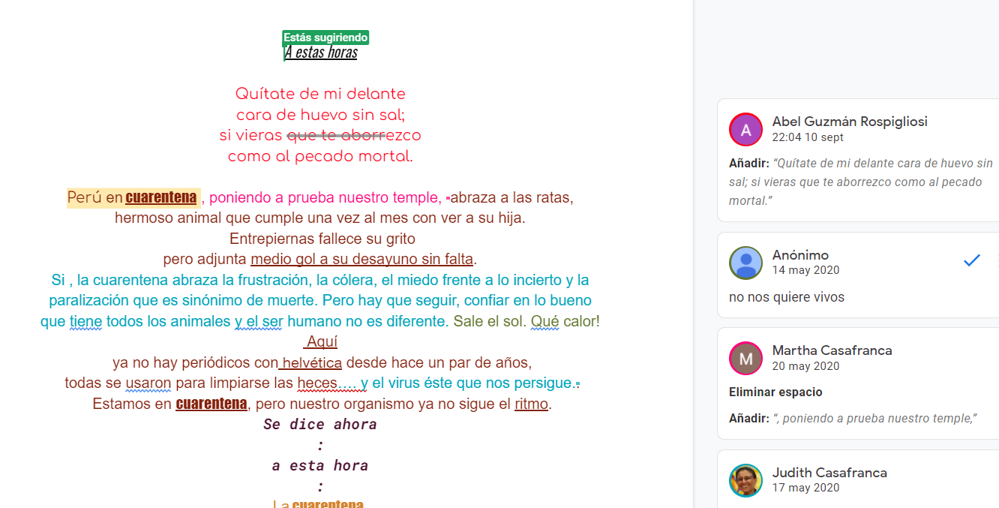

A estas
horas
Autor: Miluska Falero
Año: 2020
Soporte: Google docs / instagram
Características:
Hipermedia
Colaborativo
Reproducción: internet

Ver la obra
Autor: Miluska Falero
Año: 2020
Soporte: Google docs / instagram
Características:
Hipermedia
Colaborativo
Reproducción: internet